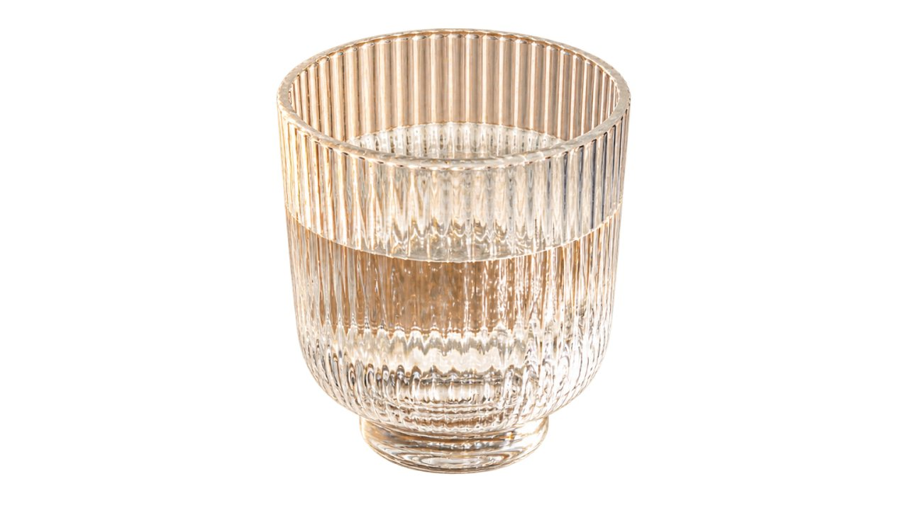
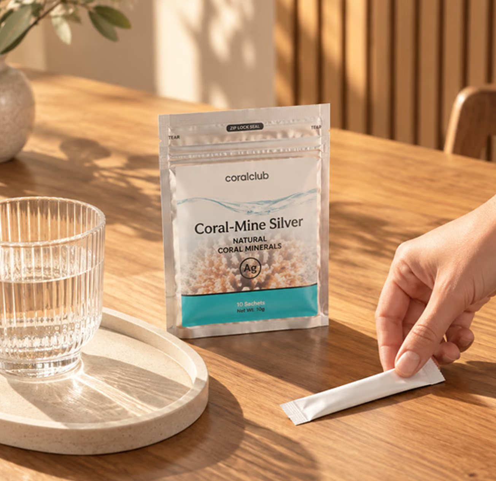
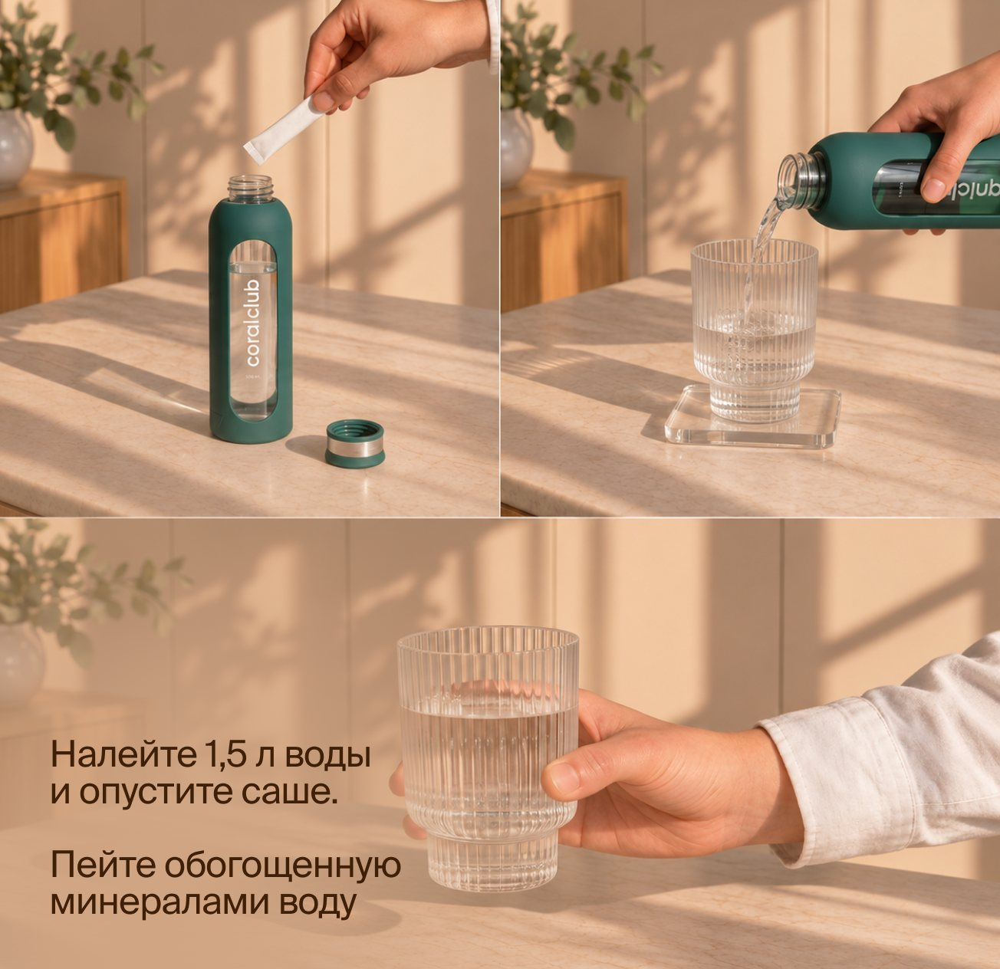

H-500 stable
Факты
Источник — карточка товара на coralclub.ru. Тексты на картинках берём только отсюда.
Параметр | Значение |
Артикулы | 91800 — 60 капсул; 91883 — 120 капсул |
Форма | Капсула. Желатиновая капсула с порошком (300 мг смеси). На сайте фото капсулы нет — цвет и размер сверить с реальной. |
Упаковка | Банка на 60 капсул |
Размер | Банка (60 капсул) ≈ Ø 5 × 8,5 см; капсула ≈ 2 см (оценка, сверить) |
Применение | 1 капсула 2 раза в день — утром и днём. Во время еды. |
На сколько хватит | 2 капсулы в день: 60 капсул — на 30 дней, 120 — на 60 дней |
Страна производства | США |
Срок годности | 2 года |
Главное правило кадра
Фото продукта для референса
Состав
Количество на 1 капсулу.
Ингредиент | Количество | % РУСП* |
Смесь H-500 (калия цитрат, магния цитрат, калия аскорбат, натрия борат, кремния диоксид), мг | 300 | — |
- Вспомогательные компоненты: желатин (капсула).
- * Рекомендуемый уровень суточного потребления; «—» — не определён.
1. Упаковка на сером фоне
Покупатель узнаёт товар и видит, что именно приедет.
- Фон ровный светло-серый #EFEFEF, без градиента и предметов.
- Упаковка спереди, по центру, занимает около 70% высоты кадра.
- Мягкая контактная тень под упаковкой, без отражений.
- Если артикул — несколько упаковок (например, Корал-Майн 3 × 10), в кадре все упаковки.
- Без текста.
Use the attached product photos as the exact product: keep its shape, proportions, colors, label, logo and every printed word unchanged. Do not redraw, translate or invent label text. Studio e-commerce packshot: one H-500 bottle standing upright, front view. Flat seamless light grey background #EFEFEF, no gradient, no props. The product is centered and fills about 70% of the frame height. Soft natural contact shadow under it, no reflections, even soft light, true colors. Real size: the bottle is about 5 cm wide and 8.5 cm tall (almost as tall as the 9 cm glass); one capsule is about 2 cm long. Square 1:1, 2000 × 2000 px. No text, no watermarks.Приложить к промту:

2. Упаковка в интерьере и что внутри
Понятен объём покупки и реальный размер упаковки.
- Интерьер из референсов, тёплый свет из окна.
- Рядом с упаковкой — её содержимое: саше, стики, таблетки или капсулы. Количество считывается: 10 саше веером, 15 стиков, таблетки стопкой.
- Рядом — рифлёный стакан (9 см): по нему виден реальный размер упаковки.
- Можно одну плашку: «30 саше · 30 дней». Без других надписей.
Плашка (добавить в Figma): 60 капсул · 30 дней
Premium wellness e-commerce photography in a warm, sunlit, minimalist interior. Golden-hour hard window light from the side, long crisp shadows with soft leaf and window-frame patterns. Materials: natural oak wood, beige travertine or light warm marble, warm beige walls, a vertical slatted oak panel in the background, a ceramic vase with a dried flower or olive branch. Calm, airy and realistic, true-to-life colors, shallow depth of field, 50–85 mm lens look. Square 1:1, 2000 × 2000 px. No watermarks, no extra logos, no invented text. Scene: a warm oak dining table in low sunlight, ribbed glass of water on a round travertine tray, ceramic vase with an olive branch, vertical slatted oak wall panel. Use the attached product photos as the exact product: keep its shape, proportions, colors, label, logo and every printed word unchanged. Do not redraw, translate or invent label text. Show the purchased quantity clearly: the H-500 bottle with the cap off, a small neat group of about ten capsules on a travertine tray in front of it, a ribbed glass of water beside them. Real size: the bottle is about 5 cm wide and 8.5 cm tall (almost as tall as the 9 cm glass); one capsule is about 2 cm long. Keep everything to real scale: the ribbed drinking glass is 9 cm tall and 8 cm wide (about 300 ml), an adult hand is about 18 cm long, the round travertine tray is about 28 cm across. Capsules are whole and closed, nothing pours out of them. Show one or two capsules next to the bottle, not a pile. No text in the image.Приложить к промту:
 фото продукта — точная упаковка
фото продукта — точная упаковка интерьер: Дубовый стол, солнечный свет
интерьер: Дубовый стол, солнечный свет
стакан 9 см — мерка масштаба линейка масштаба упаковок
линейка масштаба упаковок
пример этой карточки (стиль и композиция)3. Killer claims
3–4 сильных факта о продукте, которые хочется запомнить.
- Сцена: предмет интерьера + способ употребления продукта (саше в стакан, таблетка шипит, порошок сыплется).
- Сцена и предмет не повторяют карточки 2 и 4 этого продукта.
- Факты не повторяют карточки 4 и 5: здесь нет дозировки и цифр из таблицы состава.
- Факты не повторяются между продуктами: у каждого свой набор.
- Текст — на спокойной половине кадра, которую оставляем пустой.
Текст на карточке: H-500 — Цитраты калия и магния · Аскорбат калия и диоксид кремния · Производство — США
Premium wellness e-commerce photography in a warm, sunlit, minimalist interior. Golden-hour hard window light from the side, long crisp shadows with soft leaf and window-frame patterns. Materials: natural oak wood, beige travertine or light warm marble, warm beige walls, a vertical slatted oak panel in the background, a ceramic vase with a dried flower or olive branch. Calm, airy and realistic, true-to-life colors, shallow depth of field, 50–85 mm lens look. Square 1:1, 2000 × 2000 px. No watermarks, no extra logos, no invented text. Scene: an oak table with a small ceramic vase holding one dried flower, a folded textured linen towel and a white ceramic plate. Use the attached product photos as the exact product: keep its shape, proportions, colors, label, logo and every printed word unchanged. Do not redraw, translate or invent label text. Two capsules on a white ceramic plate next to a ribbed glass of water, the H-500 bottle standing beside them, a folded linen towel and a vase with one flower out of focus. Real size: the bottle is about 5 cm wide and 8.5 cm tall (almost as tall as the 9 cm glass); one capsule is about 2 cm long. Keep everything to real scale: the ribbed drinking glass is 9 cm tall and 8 cm wide (about 300 ml), an adult hand is about 18 cm long, the round travertine tray is about 28 cm across. Capsules are whole and closed, nothing pours out of them. Show one or two capsules next to the bottle, not a pile. Keep the left half of the frame calm and empty for text. Text on that left half, color #3F2006: a title in an elegant italic serif «H-500», below it a list in a clean sans-serif: «• Цитраты калия и магния», «• Аскорбат калия и диоксид кремния», «• Производство — США». Render the Russian text exactly as written, letter by letter, in the given order; no other text anywhere in the image.Premium wellness e-commerce photography in a warm, sunlit, minimalist interior. Golden-hour hard window light from the side, long crisp shadows with soft leaf and window-frame patterns. Materials: natural oak wood, beige travertine or light warm marble, warm beige walls, a vertical slatted oak panel in the background, a ceramic vase with a dried flower or olive branch. Calm, airy and realistic, true-to-life colors, shallow depth of field, 50–85 mm lens look. Square 1:1, 2000 × 2000 px. No watermarks, no extra logos, no invented text. Scene: an oak table with a small ceramic vase holding one dried flower, a folded textured linen towel and a white ceramic plate. Use the attached product photos as the exact product: keep its shape, proportions, colors, label, logo and every printed word unchanged. Do not redraw, translate or invent label text. Two capsules on a white ceramic plate next to a ribbed glass of water, the H-500 bottle standing beside them, a folded linen towel and a vase with one flower out of focus. Real size: the bottle is about 5 cm wide and 8.5 cm tall (almost as tall as the 9 cm glass); one capsule is about 2 cm long. Keep everything to real scale: the ribbed drinking glass is 9 cm tall and 8 cm wide (about 300 ml), an adult hand is about 18 cm long, the round travertine tray is about 28 cm across. Capsules are whole and closed, nothing pours out of them. Show one or two capsules next to the bottle, not a pile. Keep the left half of the frame calm and empty for a text overlay added later. No text in the image.Приложить к промту:
фото продукта — точная упаковка интерьер: Дерево, керамика и лёнстакан 9 см — мерка масштабалинейка масштаба упаковок
интерьер: Дерево, керамика и лёнстакан 9 см — мерка масштабалинейка масштаба упаковок пример этой карточки (стиль и композиция)
пример этой карточки (стиль и композиция)4. Как применять
Сколько, по сколько, сколько раз в день и на сколько дней хватит упаковки.
- Дозировка и частота — только из гайда (данные сайта).
- Объём воды показан честно: 60 мл — это четверть стакана, 1,5 л — графин.
- Последний пункт — на сколько дней хватит упаковки.
- Можно сетку 2 × 2 из шагов или одну сцену с текстом.
Текст на карточке: Как применять — 1 капсула утром и 1 днём · Во время еды · Банки хватит на 30 дней
Premium wellness e-commerce photography in a warm, sunlit, minimalist interior. Golden-hour hard window light from the side, long crisp shadows with soft leaf and window-frame patterns. Materials: natural oak wood, beige travertine or light warm marble, warm beige walls, a vertical slatted oak panel in the background, a ceramic vase with a dried flower or olive branch. Calm, airy and realistic, true-to-life colors, shallow depth of field, 50–85 mm lens look. Square 1:1, 2000 × 2000 px. No watermarks, no extra logos, no invented text. Scene: a close-up of a ribbed glass of water on a long white ceramic tray on an oak table, dried flowers in the corner. Use the attached product photos as the exact product: keep its shape, proportions, colors, label, logo and every printed word unchanged. Do not redraw, translate or invent label text. An open palm holding one capsule next to a ribbed glass of water on a breakfast table, morning light. Real size: the bottle is about 5 cm wide and 8.5 cm tall (almost as tall as the 9 cm glass); one capsule is about 2 cm long. Keep everything to real scale: the ribbed drinking glass is 9 cm tall and 8 cm wide (about 300 ml), an adult hand is about 18 cm long, the round travertine tray is about 28 cm across. Capsules are whole and closed, nothing pours out of them. Show one or two capsules next to the bottle, not a pile. Keep the bottom third of the frame calm and empty for text. Text on that bottom third, color #3F2006: a title in an elegant italic serif «Как применять», below it a list in a clean sans-serif: «• 1 капсула утром и 1 днём», «• Во время еды», «• Банки хватит на 30 дней». Render the Russian text exactly as written, letter by letter, in the given order; no other text anywhere in the image.Premium wellness e-commerce photography in a warm, sunlit, minimalist interior. Golden-hour hard window light from the side, long crisp shadows with soft leaf and window-frame patterns. Materials: natural oak wood, beige travertine or light warm marble, warm beige walls, a vertical slatted oak panel in the background, a ceramic vase with a dried flower or olive branch. Calm, airy and realistic, true-to-life colors, shallow depth of field, 50–85 mm lens look. Square 1:1, 2000 × 2000 px. No watermarks, no extra logos, no invented text. Scene: a close-up of a ribbed glass of water on a long white ceramic tray on an oak table, dried flowers in the corner. Use the attached product photos as the exact product: keep its shape, proportions, colors, label, logo and every printed word unchanged. Do not redraw, translate or invent label text. An open palm holding one capsule next to a ribbed glass of water on a breakfast table, morning light. Real size: the bottle is about 5 cm wide and 8.5 cm tall (almost as tall as the 9 cm glass); one capsule is about 2 cm long. Keep everything to real scale: the ribbed drinking glass is 9 cm tall and 8 cm wide (about 300 ml), an adult hand is about 18 cm long, the round travertine tray is about 28 cm across. Capsules are whole and closed, nothing pours out of them. Show one or two capsules next to the bottle, not a pile. Keep the bottom third of the frame calm and empty for a text overlay added later. No text in the image.Приложить к промту:
фото продукта — точная упаковка интерьер: Стакан на подносе, крупный планстакан 9 см — мерка масштабалинейка масштаба упаковок
интерьер: Стакан на подносе, крупный планстакан 9 см — мерка масштабалинейка масштаба упаковок
пример этой карточки (стиль и композиция)5. Состав
Полный состав в виде таблицы, как на упаковке.
- Типографская карточка без фото, фон #F8EFE6, текст #3F2006.
- Заголовок «Состав», таблица: ингредиент · количество · % РУСП (если есть).
- Единица в шапке — своя у каждого продукта: на 1 саше, на 1 таблетку, на 1 стик, на 1 капсулу.
- Сноски и «БАД. Не является лекарственным средством» — внизу мелким текстом.
- Цифры ИИ путает — карточку лучше собрать в Figma, промт ниже — запасной.
Typographic product card, no photo. Square 1:1, 2000 × 2000 px. Flat background #F8EFE6, all text #3F2006. Title centered at the top in an elegant italic serif: «Состав». Below it a clean table in a sans-serif, thick black rule above and below the header row, thin rules between rows. Header: «Название ингредиента» | «Количество на 1 капсулу» | «% РУСП*». Rows: «Смесь H-500 (калия цитрат, магния цитрат, калия аскорбат, натрия борат, кремния диоксид), мг» | «300» | «—». Small footnotes at the bottom, one per line: «Вспомогательные компоненты: желатин (капсула).», «* Рекомендуемый уровень суточного потребления; «—» — не определён.», «Страна производства: США. Срок годности: 2 года.», «БАД. Не является лекарственным средством.». Render the Russian text exactly as written, letter by letter, in the given order; no other text anywhere in the image.Приложить к промту: